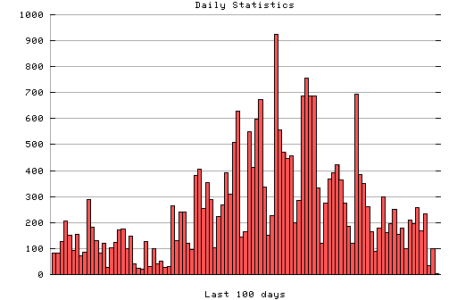

HTTP Server Daily Statistics
Covers: 09/19/95 to 03/11/96 (175 days).
All dates are in local time.
09/19/95 (Tue): 36 : #### 09/20/95 (Wed): 66 : ####### 09/21/95 (Thu): 52 : ##### 09/22/95 (Fri): 326 : ################################# 09/24/95 (Sun): 12 : # 09/25/95 (Mon): 225 : ####################### 09/26/95 (Tue): 183 : ################## 09/27/95 (Wed): 436 : ############################################ 09/28/95 (Thu): 286 : ############################# 09/29/95 (Fri): 266 : ########################### 09/30/95 (Sat): 33 : ### 10/01/95 (Sun): 90 : ######### 10/02/95 (Mon): 239 : ######################## 10/03/95 (Tue): 331 : ################################# 10/04/95 (Wed): 228 : ####################### 10/05/95 (Thu): 26 : ### 10/06/95 (Fri): 46 : ##### 10/08/95 (Sun): 244 : ######################## 10/09/95 (Mon): 478 : ################################################ 10/10/95 (Tue): 339 : ################################## 10/11/95 (Wed): 451 : ############################################# 10/12/95 (Thu): 145 : ############### 10/13/95 (Fri): 280 : ############################ 10/14/95 (Sat): 136 : ############## 10/15/95 (Sun): 122 : ############ 10/16/95 (Mon): 268 : ########################### 10/17/95 (Tue): 411 : ######################################### 10/18/95 (Wed): 193 : ################### 10/19/95 (Thu): 171 : ################# 10/20/95 (Fri): 263 : ########################## 10/21/95 (Sat): 59 : ###### 10/22/95 (Sun): 158 : ################ 10/23/95 (Mon): 197 : #################### 10/24/95 (Tue): 400 : ######################################## 10/25/95 (Wed): 277 : ############################ 10/26/95 (Thu): 284 : ############################ 10/27/95 (Fri): 198 : #################### 10/28/95 (Sat): 134 : ############# 10/29/95 (Sun): 99 : ########## 10/30/95 (Mon): 268 : ########################### 10/31/95 (Tue): 584 : ################################################||### 11/02/95 (Thu): 246 : ######################### 11/03/95 (Fri): 182 : ################## 11/04/95 (Sat): 66 : ####### 11/05/95 (Sun): 180 : ################## 11/06/95 (Mon): 202 : #################### 11/07/95 (Tue): 377 : ###################################### 11/08/95 (Wed): 211 : ##################### 11/09/95 (Thu): 250 : ######################### 11/10/95 (Fri): 207 : ##################### 11/11/95 (Sat): 163 : ################ 11/12/95 (Sun): 161 : ################ 11/13/95 (Mon): 285 : ############################# 11/14/95 (Tue): 495 : ################################################## 11/15/95 (Wed): 281 : ############################ 11/16/95 (Thu): 228 : ####################### 11/17/95 (Fri): 190 : ################### 11/18/95 (Sat): 74 : ####### 11/19/95 (Sun): 98 : ########## 11/20/95 (Mon): 314 : ############################### 11/21/95 (Tue): 255 : ########################## 11/22/95 (Wed): 221 : ###################### 11/23/95 (Thu): 279 : ############################ 11/24/95 (Fri): 250 : ######################### 11/25/95 (Sat): 60 : ###### 11/26/95 (Sun): 166 : ################# 11/27/95 (Mon): 186 : ################### 11/28/95 (Tue): 243 : ######################## 11/29/95 (Wed): 225 : ####################### 11/30/95 (Thu): 192 : ################### 12/01/95 (Fri): 208 : ##################### 12/02/95 (Sat): 83 : ######## 12/03/95 (Sun): 82 : ######## 12/04/95 (Mon): 127 : ############# 12/05/95 (Tue): 206 : ##################### 12/06/95 (Wed): 152 : ############### 12/07/95 (Thu): 92 : ######### 12/08/95 (Fri): 154 : ############### 12/09/95 (Sat): 73 : ####### 12/10/95 (Sun): 87 : ######### 12/11/95 (Mon): 288 : ############################# 12/12/95 (Tue): 182 : ################## 12/13/95 (Wed): 130 : ############# 12/14/95 (Thu): 82 : ######## 12/15/95 (Fri): 120 : ############ 12/16/95 (Sat): 29 : ### 12/17/95 (Sun): 103 : ########## 12/18/95 (Mon): 123 : ############ 12/19/95 (Tue): 173 : ################# 12/20/95 (Wed): 174 : ################# 12/21/95 (Thu): 99 : ########## 12/22/95 (Fri): 148 : ############### 12/23/95 (Sat): 41 : #### 12/24/95 (Sun): 25 : ### 12/25/95 (Mon): 19 : ## 12/26/95 (Tue): 127 : ############# 12/27/95 (Wed): 30 : ### 12/28/95 (Thu): 100 : ########## 12/29/95 (Fri): 42 : #### 12/30/95 (Sat): 52 : ##### 12/31/95 (Sun): 27 : ### 01/01/96 (Mon): 31 : ### 01/02/96 (Tue): 266 : ########################### 01/03/96 (Wed): 129 : ############# 01/04/96 (Thu): 239 : ######################## 01/05/96 (Fri): 240 : ######################## 01/06/96 (Sat): 119 : ############ 01/07/96 (Sun): 96 : ########## 01/08/96 (Mon): 383 : ###################################### 01/09/96 (Tue): 404 : ######################################## 01/10/96 (Wed): 254 : ######################### 01/11/96 (Thu): 355 : #################################### 01/12/96 (Fri): 287 : ############################# 01/13/96 (Sat): 102 : ########## 01/14/96 (Sun): 224 : ###################### 01/15/96 (Mon): 267 : ########################### 01/16/96 (Tue): 391 : ####################################### 01/17/96 (Wed): 308 : ############################### 01/18/96 (Thu): 509 : ################################################### 01/19/96 (Fri): 628 : ################################################||### 01/20/96 (Sat): 145 : ############### 01/21/96 (Sun): 164 : ################ 01/22/96 (Mon): 551 : ################################################||### 01/23/96 (Tue): 412 : ######################################### 01/24/96 (Wed): 599 : ################################################||### 01/25/96 (Thu): 675 : ################################################||### 01/26/96 (Fri): 338 : ################################## 01/27/96 (Sat): 150 : ############### 01/28/96 (Sun): 226 : ####################### 01/29/96 (Mon): 923 : ################################################||### 01/30/96 (Tue): 557 : ################################################||### 01/31/96 (Wed): 470 : ############################################### 02/01/96 (Thu): 446 : ############################################# 02/02/96 (Fri): 458 : ############################################## 02/03/96 (Sat): 199 : #################### 02/04/96 (Sun): 286 : ############################# 02/05/96 (Mon): 688 : ################################################||### 02/06/96 (Tue): 755 : ################################################||### 02/07/96 (Wed): 689 : ################################################||### 02/08/96 (Thu): 686 : ################################################||### 02/09/96 (Fri): 333 : ################################# 02/10/96 (Sat): 119 : ############ 02/11/96 (Sun): 275 : ############################ 02/12/96 (Mon): 369 : ##################################### 02/13/96 (Tue): 391 : ####################################### 02/14/96 (Wed): 422 : ########################################## 02/15/96 (Thu): 364 : #################################### 02/16/96 (Fri): 274 : ########################### 02/17/96 (Sat): 186 : ################### 02/18/96 (Sun): 120 : ############ 02/19/96 (Mon): 693 : ################################################||### 02/20/96 (Tue): 386 : ####################################### 02/21/96 (Wed): 351 : ################################### 02/22/96 (Thu): 262 : ########################## 02/23/96 (Fri): 166 : ################# 02/24/96 (Sat): 91 : ######### 02/25/96 (Sun): 177 : ################## 02/26/96 (Mon): 300 : ############################## 02/27/96 (Tue): 160 : ################ 02/28/96 (Wed): 197 : #################### 02/29/96 (Thu): 251 : ######################### 03/01/96 (Fri): 153 : ############### 03/02/96 (Sat): 177 : ################## 03/03/96 (Sun): 100 : ########## 03/04/96 (Mon): 208 : ##################### 03/05/96 (Tue): 195 : #################### 03/06/96 (Wed): 257 : ########################## 03/07/96 (Thu): 169 : ################# 03/08/96 (Fri): 235 : ######################## 03/09/96 (Sat): 34 : ### 03/10/96 (Sun): 98 : ########## 03/11/96 (Mon): 2 :

Statistics generated at Mon Mar 11 03:08:08 MET 1996, (C) Schibsted Nett AS, 1995.